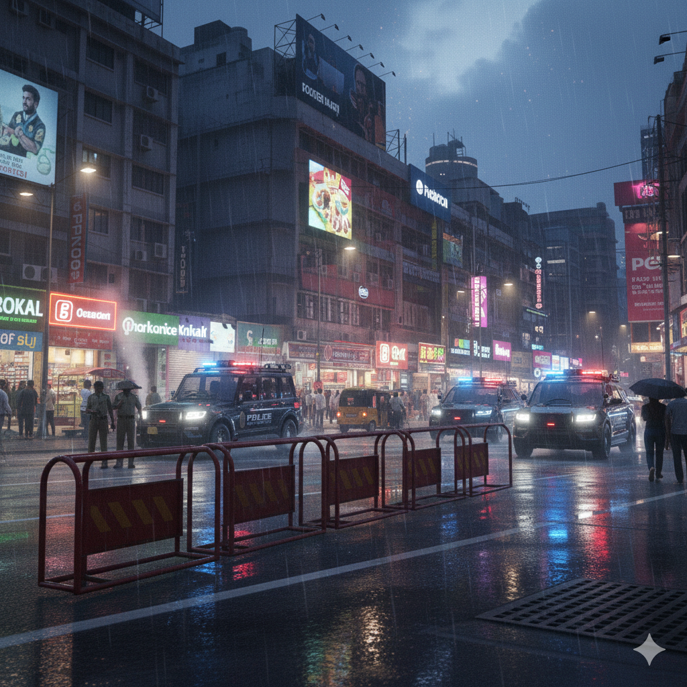
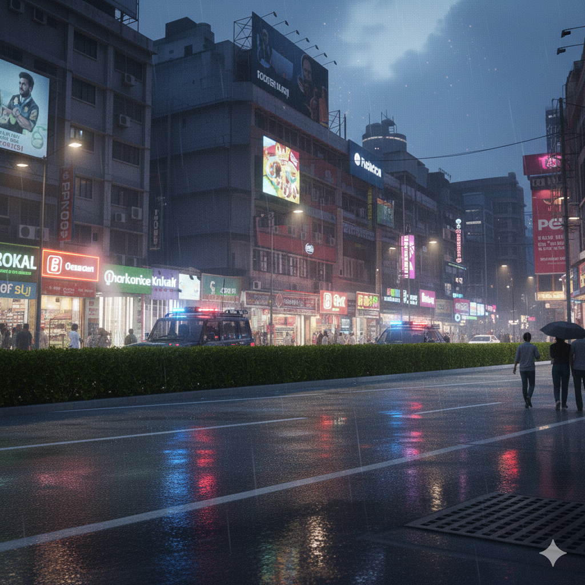
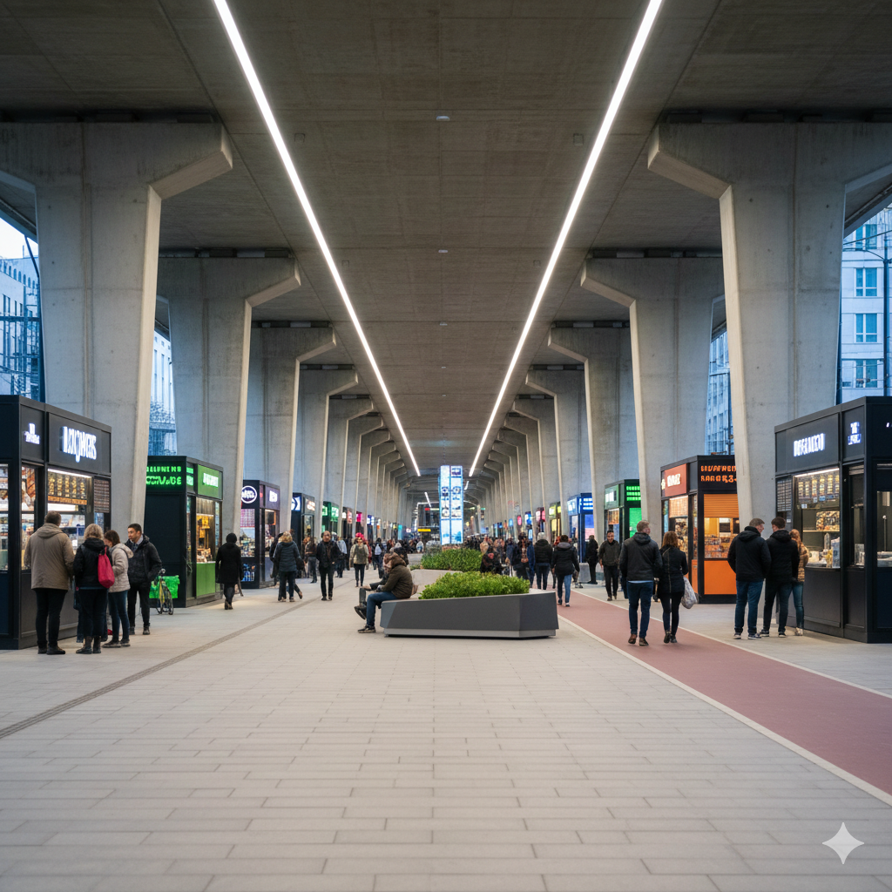

Reinforced 24/7 Patrolling
Delhi mein itne saare police departments hone ke baad bhi night/morning patrolling weak hai, jisse snatching peak par rehti hai.
Execution Strategy:
- Unit Allocation: Subah 4 AM se 8 AM tak har sector mein 5 mobile interceptor units deployment.
- Live Monitoring: Har unit ko GPS dashboard se connect karke 100% attendance verify karna.
- Response Time: Kisi bhi crime alert par arrival time ko 3 minute se kam par set karna.

Vegetation Visibility Clearing
Chor road-side ghane jhaadiyon (bushes) ke peeche chhupte hain aur wahan se snatching karke gayab ho jaate hain.
Execution Strategy:
- Height Restriction: Roadside plants ki height maximum 2 feet tak rakhna compulsory karna.
- Visual Audit: CCTV cameras ki line-of-sight block karne wale pedon ki trimming har 15 din mein karna.
- Alternative Landscaping: Unki jagah thorns ya cactus lagana jahan koi baith ya chhup na sake.

AI-Vision Grid Deployment
Purane CCTV sirf recording karte hain, humein real-time identification aur prevention chahiye.
Execution Strategy:
- Face/Gait Recognition: Face ke saath-saath chalne ke dhang se criminal identify karne wale sensor lagana.
- Night Vision Upgrade: Low-light high-def cameras lagana jo ghup andhere mein bhi clear photo dein.
- Alert System: Suspicious activity detect hote hi nearest patrolling unit ko auto-notification bhejna.
Bridge Underpass Urbanization
Bridges ke neeche illegal settlements aur drug spots ban jaate hain kyunki wahan light aur activity nahi hai.
Execution Strategy:
- Kiosk Licensing: Bridge ke niche small shops (tea/snacks) ko 24/7 license dena taaki lights aur log bane rahein.
- Sanitation: Har underpass mein clean, sensor-based public bathrooms install karna.
- Clearance Drive: Illegal settlements hata kar wahan high-intensity lighting grid install karna.

Dedicated Transit Lanes
Buses aur E-Rickshaws ka road ke beech mein rukna Delhi ke traffic jam ka sabse bada kaaran hai.
Execution Strategy:
- Physical Barriers: Left lane ko concrete barriers se separate karna sirf Public Transport ke liye.
- Geo-Fencing: Buses aur Rickshaws ke liye fixed geo-fenced stops banana; beech road par rukne par automatic fine.
- Strict Fine: Lane violation karne par ₹5000 ka immediate license-linked fine deploy karna.
Roadside Mandi Decentralization
Roadside sabji thele roads ko 50% narrow kar dete hain jisse emergency vehicles bhi phans jaate hain.
Execution Strategy:
- Abandoned Plot Use: Har colony ke paas ke abandoned plots ko identify karke unhe mandi mein badalna.
- Vendor Allocation: Sabhi roadside vendors ko un plots mein permanent stall number assign karna.
- Zero Road Tolerance: Road par thela lagane par equipment seizure aur permanent ban apply karna.
Night-Life Food Carnivals
Roadside food stalls se pollution aur traffic hota hai, par wo Delhi ki backbone bhi hain.
Execution Strategy:
- Designated Zones: Sheher ke purane plots ko modern Food Hubs mein badalna jo 24/7 open rahein.
- Tourism Attraction: In carnivals ko neon-lighting aur clean seating ke saath Delhi ka landmark banana.
- Waste Management: Har food hub mein on-site composting unit lagana zaroori karna.
Pillar-Gap Sealing (Anti-Drug)
Addicts bridge pillars ke gaps aur abandoned buildings mein hideouts bana lete hain.
Execution Strategy:
- Filler Blocks: Sabhi pillars ke hollow spaces ko unbreakable industrial grade material se seal karna.
- Building Repurpose: Abandoned buildings ko hospital ya govt offices mein convert karke security lagana.
- Motion Lights: Pillar areas mein sensor-based bright lights lagana jo movement par on ho jayein.

Eco-Transit Dominance
Pollution kam karne ke liye Metro aur EV buses ki frequency badhana sabse bada solution hai.
Execution Strategy:
- Peak Hour Frequency: Metro aur EV buses ka wait-time peak hours mein 90 seconds se kam karna.
- Last Mile: EV shuttle buses ka har metro station par 24/7 availability ensure karna.
- Subsidy Logic: Private car owners ko EV buses use karne par tax benefits ya cashback dena.
Waste-to-Brick Circular Economy
Landfills (kudhe ke pahad) khatam karne ke liye humein unhe construction material mein badalna hoga.
Execution Strategy:
- Compressive Tech: Landfill waste ko high-pressure compress karke bricks banana jo 5x zyada strong hon.
- Water Resistance: Ye bricks normal bricks se 100% zyada water-resistant hongi, drainage ke liye best.
- Cost Control: In bricks ko Govt projects mein use karke construction cost 30% kam karna.

Self-Sustaining Solar Grid
Delhi ki har gali mein andhera crime ko badhava deta hai, aur grid par load daalta hai.
Execution Strategy:
- Independent Units: Har street light ko solar panel aur battery se independent banana taaki grid-fail par bhi chalti rahein.
- Full Coverage: Purani Delhi ki tang galiyon mein wall-mounted solar lights lagana.
- Automatic Dimm: Raat ko traffic na hone par automatic dim hona taaki battery save ho sake.

Interceptor Fleet Overhaul
Normal police gaadiyan high-speed criminals ko chase nahi kar paati, jisse wo bhaagne mein kamyab ho jaate hain.
Execution Strategy:
- High-HP Fleet: Police ko 200+ HP wali tactical interceptor cars aur high-speed bikes dena.
- Pursuit Tech: Gaadiyon mein on-board tracking sensors lagana jo criminals par GPS-dart fire kar sakein.
- Driver Training: Sabhi patrolling officers ko professional tactical pursuit driving sikhana.

Biometric Citizen Verification
Non-Indian citizens illegal reh kar resources use kar rahe hain aur crime cases mein bhi track nahi hote.
Execution Strategy:
- Door-to-Door Audit: AI aur Biometric tools ke saath high-risk zones mein verification drive chalana.
- Database Mapping: Har resident ko "Delhi Citizen ID" se link karna taaki resources sahi logon ko milein.
- Strict Removal: Illegal residents ko deport karke un areas ko redevelopment ke liye use karna.

Smart Sanitation Rebuild
Kharab aur gande bathrooms ki wajah se log public spaces ko ganda karte hain.
Execution Strategy:
- Modular Design: Purane bathrooms ko replace karke sensor-based automated cleaning bathrooms lagana.
- Maintenance Staff: Har toilet block mein 24/7 staff compulsory karna jinka feedback user QR-code se de sake.
- Water Recycling: Bathrooms mein gray-water recycling system lagana taaki water wastage zero ho.

Collective Accountability Law
Jab tak log ek-dusre ko nahi tokenge, road par kacha fenkna band nahi hoga.
Execution Strategy:
- Street Fine: Agar road par kacha milta hai, toh poori gali par ₹500/per house ka collective fine.
- Service Suspension: Fine na bharne tak us street ki garbage collection aur public services block karna.
- Reward System: Sabse saaf street ko monthly electricity bill mein 10% discount dena.

Contractor License Termination
Contractors road tod kar kaam karte hain aur usse mahinon tak thik nahi karte, jisse accidents hote hain.
Execution Strategy:
- Strict Deadline: Kaam khatam hone ke 24 ghante ke andar road restoring compulsory.
- License Blacklist: Delay hone par contractor ka license lifetime ke liye cancel aur payment block.
- Citizen Audit: Local residents se "Completion Certificate" lena contractor ki final payment ke liye.

Fair-Trade Patrol Units
Markets mein tourists aur local citizens se overpricing karke loot-paat aur Delhi ki badnami hoti hai.
Execution Strategy:
- Undercover Patrol: Plain-clothes mein police officers ka markets mein ghumna aur rate-check karna.
- Price Tag Policy: Har item par digital ya printed price tag hona mandatory karna.
- Instant Fine: Overpricing detect hote hi shop-owner par ₹10,000 fine aur shop 3 din ke liye seal.